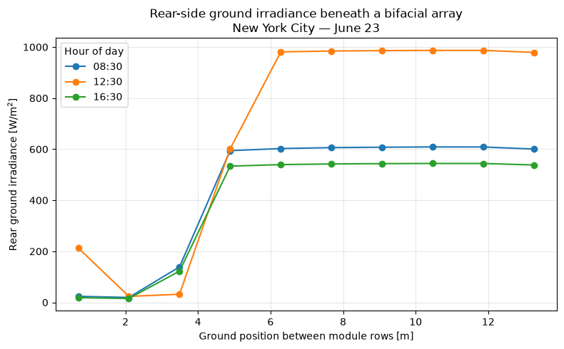

PySAM for a Single Location#
Run a PySAM pvsamv1 simulation for a single location, inspect the model output
dictionary, and visualize the spatial rear-side ground irradiance profile
beneath a bifacial array.
This notebook uses a cached NSRDB weather file for New York City that ships with the repository, so it runs fully offline with no API key or network access required.
import os
import json
import numpy as np
import pandas as pd
import matplotlib.pyplot as plt
import pvdeg
# Load cached NSRDB weather for New York City that ships with the repo.
# This keeps the notebook reproducible and fully offline (no API key or network).
repo_root = os.path.dirname(os.path.dirname(pvdeg.__file__))
weather_path = os.path.join(repo_root, "tutorials", "data", "psm4_nyc.csv")
meta_path = os.path.join(repo_root, "tutorials", "data", "meta_nyc.json")
weather = pd.read_csv(weather_path, index_col=0, parse_dates=True)
with open(meta_path, "r") as f:
meta = json.load(f)
meta
---------------------------------------------------------------------------
FileNotFoundError Traceback (most recent call last)
Cell In[2], line 7
3 repo_root = os.path.dirname(os.path.dirname(pvdeg.__file__))
4 weather_path = os.path.join(repo_root, "tutorials", "data", "psm4_nyc.csv")
5 meta_path = os.path.join(repo_root, "tutorials", "data", "meta_nyc.json")
6
----> 7 weather = pd.read_csv(weather_path, index_col=0, parse_dates=True)
8 with open(meta_path, "r") as f:
9 meta = json.load(f)
10
File /opt/hostedtoolcache/Python/3.11.16/x64/lib/python3.11/site-packages/pandas/io/parsers/readers.py:873, in read_csv(filepath_or_buffer, sep, delimiter, header, names, index_col, usecols, dtype, engine, converters, true_values, false_values, skipinitialspace, skiprows, skipfooter, nrows, na_values, keep_default_na, na_filter, skip_blank_lines, parse_dates, date_format, dayfirst, cache_dates, iterator, chunksize, compression, thousands, decimal, lineterminator, quotechar, quoting, doublequote, escapechar, comment, encoding, encoding_errors, dialect, on_bad_lines, low_memory, memory_map, float_precision, storage_options, dtype_backend)
861 kwds_defaults = _refine_defaults_read(
862 dialect,
863 delimiter,
(...) 869 dtype_backend=dtype_backend,
870 )
871 kwds.update(kwds_defaults)
--> 873 return _read(filepath_or_buffer, kwds)
File /opt/hostedtoolcache/Python/3.11.16/x64/lib/python3.11/site-packages/pandas/io/parsers/readers.py:300, in _read(filepath_or_buffer, kwds)
297 _validate_names(kwds.get("names", None))
299 # Create the parser.
--> 300 parser = TextFileReader(filepath_or_buffer, **kwds)
302 if chunksize or iterator:
303 return parser
File /opt/hostedtoolcache/Python/3.11.16/x64/lib/python3.11/site-packages/pandas/io/parsers/readers.py:1645, in TextFileReader.__init__(self, f, engine, **kwds)
1642 self.options["has_index_names"] = kwds["has_index_names"]
1644 self.handles: IOHandles | None = None
-> 1645 self._engine = self._make_engine(f, self.engine)
File /opt/hostedtoolcache/Python/3.11.16/x64/lib/python3.11/site-packages/pandas/io/parsers/readers.py:1904, in TextFileReader._make_engine(self, f, engine)
1902 if "b" not in mode:
1903 mode += "b"
-> 1904 self.handles = get_handle(
1905 f,
1906 mode,
1907 encoding=self.options.get("encoding", None),
1908 compression=self.options.get("compression", None),
1909 memory_map=self.options.get("memory_map", False),
1910 is_text=is_text,
1911 errors=self.options.get("encoding_errors", "strict"),
1912 storage_options=self.options.get("storage_options", None),
1913 )
1914 assert self.handles is not None
1915 f = self.handles.handle
File /opt/hostedtoolcache/Python/3.11.16/x64/lib/python3.11/site-packages/pandas/io/common.py:930, in get_handle(path_or_buf, mode, encoding, compression, memory_map, is_text, errors, storage_options)
925 elif isinstance(handle, str):
926 # Check whether the filename is to be opened in binary mode.
927 # Binary mode does not support 'encoding' and 'newline'.
928 if ioargs.encoding and "b" not in ioargs.mode:
929 # Encoding
--> 930 handle = open(
931 handle,
932 ioargs.mode,
933 encoding=ioargs.encoding,
934 errors=errors,
935 newline="",
936 )
937 else:
938 # Binary mode
939 handle = open(handle, ioargs.mode)
FileNotFoundError: [Errno 2] No such file or directory: '/opt/hostedtoolcache/Python/3.11.16/x64/lib/python3.11/site-packages/tutorials/data/psm4_nyc.csv'
out_dict = pvdeg.pysam.pysam(
weather_df=weather,
meta=meta,
pv_model="pvsamv1",
pv_model_default="FlatPlatePVCommercial",
)
for key in sorted(out_dict.keys()):
print(key)
ac_gross
ac_lifetime_loss
ac_perf_adj_loss
ac_transmission_loss
ac_wiring_loss
airmass
alb
annual_ac_gross
annual_ac_inv_clip_loss_percent
annual_ac_inv_eff_loss_percent
annual_ac_inv_pnt_loss_percent
annual_ac_inv_pso_loss_percent
annual_ac_lifetime_loss_percent
annual_ac_loss_ond
annual_ac_perf_adj_loss_percent
annual_ac_wiring_loss
annual_ac_wiring_loss_percent
annual_bifacial_electrical_mismatch
annual_bifacial_electrical_mismatch_percent
annual_dc_diodes_loss
annual_dc_diodes_loss_percent
annual_dc_gross
annual_dc_inv_tdc_loss_percent
annual_dc_invmppt_loss
annual_dc_lifetime_loss_percent
annual_dc_loss_ond
annual_dc_mismatch_loss
annual_dc_mismatch_loss_percent
annual_dc_module_loss_percent
annual_dc_mppt_clip_loss_percent
annual_dc_nameplate_loss
annual_dc_nameplate_loss_percent
annual_dc_net
annual_dc_nominal
annual_dc_optimizer_loss
annual_dc_optimizer_loss_percent
annual_dc_perf_adj_loss_percent
annual_dc_snow_loss_percent
annual_dc_tracking_loss
annual_dc_tracking_loss_percent
annual_dc_wiring_loss
annual_dc_wiring_loss_percent
annual_energy
annual_energy_distribution_time
annual_gh
annual_ground_absorbed
annual_ground_absorbed_percent
annual_ground_incident
annual_ground_incident_percent
annual_inv_cliploss
annual_inv_pntloss
annual_inv_psoloss
annual_inv_tdcloss
annual_poa_beam_eff
annual_poa_beam_nom
annual_poa_cover_loss_percent
annual_poa_eff
annual_poa_front
annual_poa_nom
annual_poa_rear
annual_poa_rear_direct_diffuse
annual_poa_rear_gain_percent
annual_poa_rear_ground_reflected
annual_poa_rear_rack_shaded
annual_poa_rear_row_reflections
annual_poa_rear_self_shaded
annual_poa_rear_soiled
annual_poa_shaded
annual_poa_shaded_soiled
annual_poa_shading_loss_percent
annual_poa_soiling_loss_percent
annual_rack_shaded_percent
annual_rear_direct_diffuse_percent
annual_rear_ground_reflected_percent
annual_rear_row_reflections_percent
annual_rear_self_shaded_percent
annual_rear_soiled_percent
annual_subarray1_dc_diodes_loss
annual_subarray1_dc_gross
annual_subarray1_dc_mismatch_loss
annual_subarray1_dc_nameplate_loss
annual_subarray1_dc_tracking_loss
annual_subarray1_dc_wiring_loss
annual_total_loss_percent
annual_transmission_loss
annual_transmission_loss_percent
annual_xfmr_loss_percent
bifacial_electrical_mismatch
capacity_factor
capacity_factor_ac
dc_degrade_factor
dc_invmppt_loss
dc_lifetime_loss
dc_net
dc_snow_loss
df
dn
elev
gen
gh
gh_calc
ground_absorbed
ground_incident
inv_cliploss
inv_eff
inv_pntloss
inv_psoloss
inv_tdcloss
inv_total_loss
inverterMPPT1_DCVoltage
kwh_per_kw
lat
lon
monthly_dc
monthly_energy
monthly_poa_beam_eff
monthly_poa_beam_nom
monthly_poa_eff
monthly_poa_front
monthly_poa_nom
monthly_poa_rear
nameplate_dc_rating
performance_ratio
poa_beam_eff
poa_beam_nom
poa_eff
poa_front
poa_nom
poa_rear
poa_rear_direct_diffuse
poa_rear_ground_reflected
poa_rear_rack_shaded
poa_rear_row_reflections
poa_rear_self_shaded
poa_rear_soiled
poa_shaded
poa_shaded_soiled
shadedb_subarray1_shade_frac
sixpar_Adj
sixpar_Il
sixpar_Io
sixpar_Rs
sixpar_Rsh
sixpar_a
snowdepth
sol_alt
sol_azi
sol_zen
subarray1_aoi
subarray1_aoi_modifier
subarray1_axisrot
subarray1_beam_shading_factor
subarray1_celltemp
subarray1_celltempSS
subarray1_dc_gross
subarray1_dc_voltage
subarray1_dcloss
subarray1_ground_rear_spatial
subarray1_idealrot
subarray1_isc
subarray1_linear_derate
subarray1_modeff
subarray1_poa_beam_front_cs
subarray1_poa_diffuse_front_cs
subarray1_poa_eff
subarray1_poa_eff_beam
subarray1_poa_eff_diff
subarray1_poa_front
subarray1_poa_ground_front_cs
subarray1_poa_nom
subarray1_poa_rear
subarray1_poa_rear_cs
subarray1_poa_rear_spatial
subarray1_poa_shaded
subarray1_poa_shaded_soiled
subarray1_soiling_derate
subarray1_ss_derate
subarray1_ss_diffuse_derate
subarray1_ss_reflected_derate
subarray1_surf_azi
subarray1_surf_tilt
subarray1_voc
sunpos_hour
sunup
system_capacity_ac
tdry
ts_shift_hours
tz
wfpoa
wspd
xfmr_ll_ts
xfmr_ll_year1
xfmr_loss_ts
xfmr_loss_year1
xfmr_nll_ts
xfmr_nll_year1
# Most outputs are scalars or 1-D time series. A few are 2-D matrices, returned
# as a tuple whose entries are themselves tuples (rows). Find those.
for key, item in out_dict.items():
if isinstance(item, tuple) and item and isinstance(item[0], tuple):
print(key)
annual_energy_distribution_time
subarray1_ground_rear_spatial
subarray1_poa_rear_spatial
Spatial ground irradiance#
A few outputs describe irradiance that varies across the ground between module rows and are returned as 2-D matrices (a tuple of row tuples):
subarray1_ground_rear_spatial— rear-side irradiance reaching the ground.subarray1_poa_rear_spatial— rear-side plane-of-array irradiance.
We visualize subarray1_ground_rear_spatial, which matters for agrivoltaics: it
tells us how much light reaches the ground beneath a bifacial array. Its layout is:
Row
0— the ground positions (in metres) where irradiance is evaluated. The leading value is a0placeholder.Rows
1:— one row per hourly timestep. The leading value is the timestep index; the remaining values are the irradiance at each position.
spatial = out_dict["subarray1_ground_rear_spatial"]
# Row 0 holds the ground positions (drop the leading placeholder).
# In every data row, column 0 is the timestep index, so drop it too.
distances = np.array(spatial[0])[1:]
ground_irradiance = np.array(spatial[1:])[:, 1:] # shape: (hours, positions)
# Pick the sunniest day (greatest total rear ground irradiance) to visualize.
daily_total = ground_irradiance.reshape(-1, 24, distances.size).sum(axis=(1, 2))
best_day = int(daily_total.argmax())
day_slice = slice(best_day * 24, best_day * 24 + 24)
day_index = weather.index[day_slice]
day_irradiance = ground_irradiance[day_slice]
# Ground irradiance varies across the pitch because the module rows cast a moving
# shadow. Plot the spatial profile at a few hours to see the shading band shift.
fig, ax = plt.subplots(figsize=(8, 5))
for hour in (8, 12, 16):
ax.plot(
distances,
day_irradiance[hour],
marker="o",
label=day_index[hour].strftime("%H:%M"),
)
ax.set_xlabel("Ground position between module rows [m]")
ax.set_ylabel("Rear ground irradiance [W/m$^2$]")
ax.set_title(
"Rear-side ground irradiance beneath a bifacial array\n"
f"New York City \u2014 {day_index[0].strftime('%B')} {day_index[0].day}"
)
ax.legend(title="Hour of day")
ax.grid(True, alpha=0.3)
fig.tight_layout()
plt.show()
